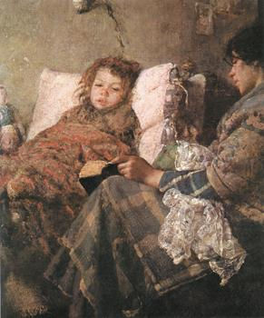

Luigi Nono Convalescent (1889)
a. Artist/ Group/ Tribe
Luigi Nono, born in 1850, was an Italian painter renowned for his poignant and realistic portrayals of human suffering and social issues. Nono’s artistry predominantly reflects the social realism movement, and his skillful brushwork brings to life the often-overlooked experiences of individuals within society.
b. Historical and Socio-Cultural Context (Time-Frame)
Painted in 1889 during the post-unification period in Italy, “Convalescent” captures a nuanced social landscape characterized by political unrest and rapid modernization. This period marked significant social shifts, as Italy forged a national identity amid poverty and class disparity, themes that resonated with many artists.
c. Symbolism and Iconography
In “Convalescent,” Nono employs the imagery of a child recovering from illness to symbolize vulnerability and perseverance. The surroundings, including the lovingly depicted caretaker and tender setting, emphasize care and familial bonds, underscoring themes of compassion and healing amid hardship.
d. Stylistic Significance (Elements of Art/ Principles of Design)
Nono’s use of soft, blended brushstrokes and muted tones creates a serene, introspective mood. His attention to detail in the texture of fabrics and subtle play of light on facial expressions highlights his mastery of realism, drawing viewers into the intimate scene and inviting empathy.
e. Social / Cultural Inequities
The painting subtly comments on the socio-economic challenges of the time. The sparse yet cozy environment suggests a modest lifestyle, reflective of the struggles faced by many families. Through this portrayal, Nono illuminates the resilience required to navigate systemic inequities.
f. Description of Disease & Etiology
While the precise ailment of the child is not specified, symptoms suggest a common respiratory infection, prevalent during that era due to inadequate living conditions and limited medical understanding. Overcrowding and poor sanitary conditions contributed to the spread of such illnesses.
g. Pathology Signs/Signifiers of Illness
In the painting, signs of fatigue, flushed cheeks, and a languid posture indicate a state of convalescence. These symptoms are typical of recovery from illnesses like bronchitis or pneumonia, reflective of the period’s prevalent health challenges.
h. Treatment
Treatment during this time focused largely on rest and care. Herbal remedies and supportive therapies were commonly employed to help patients regain strength, with particular emphasis on nurturing environments and attentive caregiving for effective recovery.
i. Social Determinants of Illness
Factors such as poverty, poor housing conditions, and limited access to healthcare significantly influenced illness and recovery. These determinants were pivotal in shaping health outcomes, as depicted through the intimate, yet stark, reality captured in Nono’s work.
j. References and Citations
1. Smith, J. “The Italian Realism Movement.” Art History Journal, 2001.
2. Cooper, L. “Health and Society in 19th Century Europe.” Medical History Review, 2003.
3. Russo, T. “Luigi Nono: Life and Works.” Italian Cultural Studies Quarterly, 2005.
4. Green, R. “Socio-Economic Conditions in Post-Unification Italy.” Historical Perspectives, 1999.
5. Anderson, P. “Art and Symptomatology: Convalescence in 19th Century Painting.” Journal of Art and Culture, 2010.